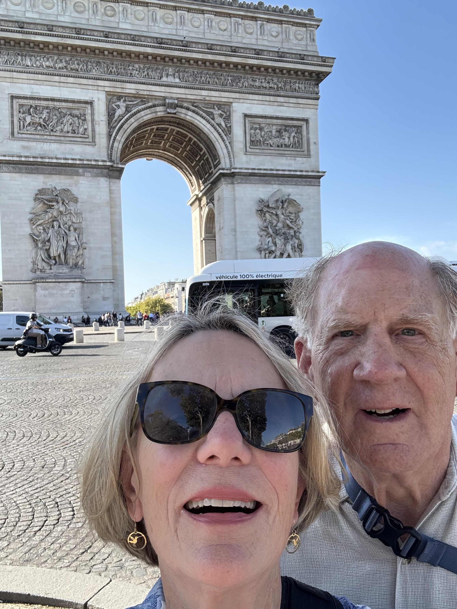
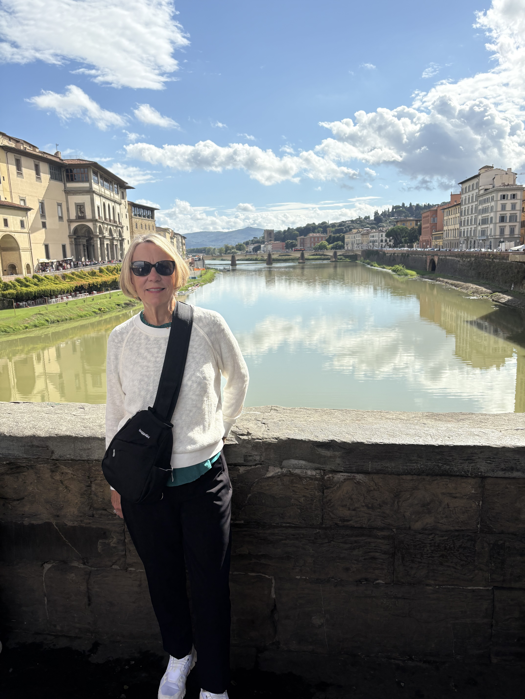
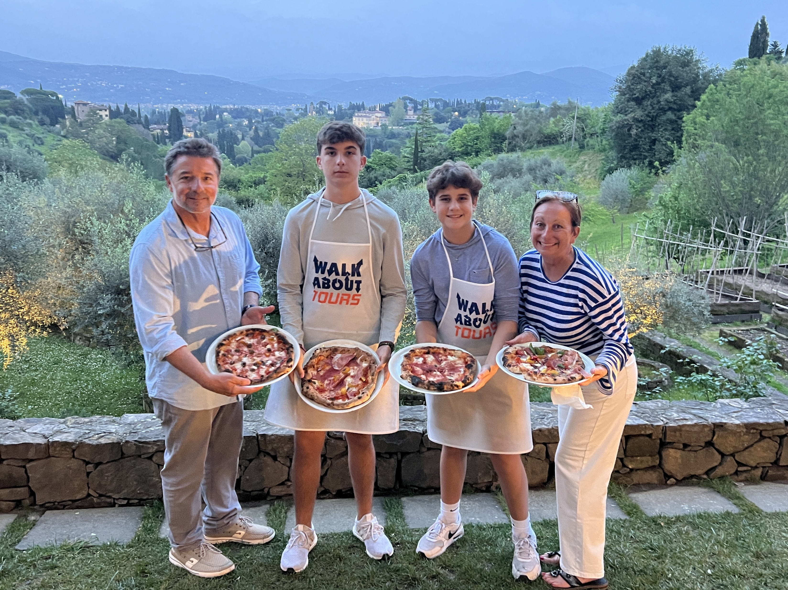
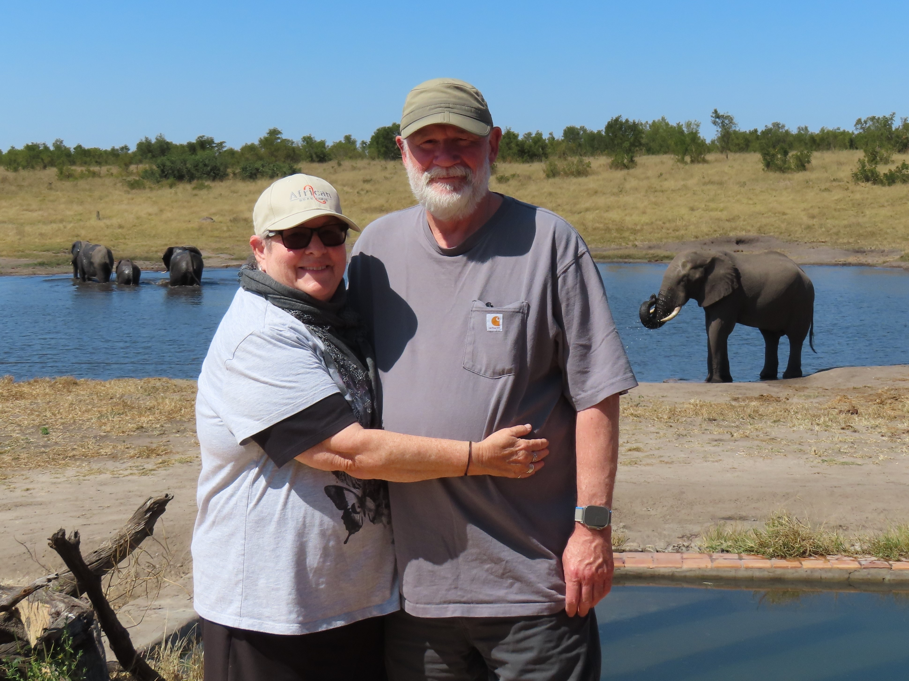
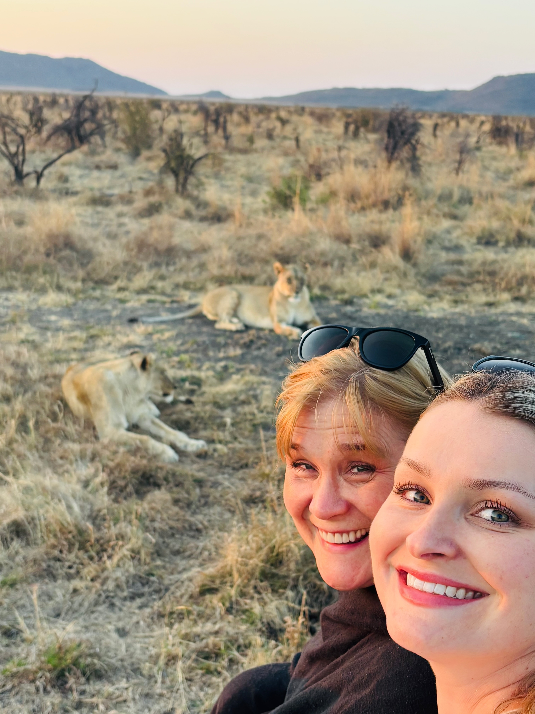

We recommend Mei-Mei highly in every way as a travel advisor. Being so well traveled herself, she has a wealth of experience and good suggestions...Mei-Mei is a problem solver. Our air travel from Paris to Rome took longer than planned. We were going to miss our timed visit late afternoon to the Coliseum and Roman Forum. I texted Mei-Mei from the airport. She immediately reached out to the tour rep and worked hard quickly to reschedule our visit for two days later.
We are very thankful that we and Mei-Mei found each other. Her extensive travel knowledge, her excellent communication skills, her desire to create a great travel experience for her clients, her attention to detail and her quick responsiveness to questions and problems make her a jewel as a travel advisor.


An enthusiastic “THANK. YOU. MEI-MEI!!!” was a repeated refrain during our two-week trip to Italy over spring break.
Our family loves adventure and travel, but we are not the best at planning the details, especially when it comes to travel in unfamiliar places.
We shared our full itinerary with Mei-Mei, explaining how we like DOING things, not just SEEING things. She immediately understood what we meant, and worked quickly to modify our original itinerary.
Pizza and gelato making at a Tuscan Farmhouse? Yes, please, and THANK YOU MEI-MEI! (If you’re going to Italy, please do this; it was so much fun!)
Dinner at a fabulous LOCAL trattoria in Oltrarno in Florence? Delicious! And THANK YOU MEI-MEI! (and Regan too!)
A special request for a family heritage day in Lucca to explore where my dad’s family originated? Mei-Mei said, “Absolutely! Let’s make it happen!” She made it so easy on us by booking the trains between Lucca and Florence, AND she connected us with the most wonderful local guide. Bucket list item, check! THANK YOU MEI-MEI!
Our time in Rome was truly spectacular because of how Mei-Mei rearranged our itinerary to include activities like riding e-bikes along the Appian Way with a private guide; a full guided tour of Rome by golf cart; skip the line tickets to tour the Colosseum with a private guide; and skip the line tickets for the Vatican and Sistine Chapel. She even handled our registration for the Jubilee pilgrimage to enter the Holy Doors.
At Mei-Mei’s wise suggestion, we spent two days on the Amalfi Coast instead of making it a long day trip from Rome. This was the best advice we received for our whole trip. If our boys ever go missing, the first place I will look is Amalfi. And if I ever go missing, you’ll probably find me at the top of the hill in Ravello eating gelato and sipping limoncello. We all fell in love with the Amalfi Coast, and we have Mei-Mei to thank! She made it so easy and seamless for us: an early train from Rome; ferry service to Positano; backpack storage in Positano; an overnight stay in the most exquisite bed and breakfast in Amalfi (just steps from the beach); a private taxi ride along the coast to Ravello; and a private taxi to the train station to return to Rome.
We cannot say enough good things about our experience with Mei-Mei. Her attention to her clients and their needs is exceptional, and her passion for travel and adventure shines through in her creative itineraries. Book the trip! You will not be disappointed.

Looking for adventure, life-changing experiences, beauty beyond imagination, up-close and personal interactions with the locals?
The mother and daughter team of Mei-Mei and Regan Kirk can help your dreamed-of vacations become a reality... The Kirk team devotes a lot of energy to finding the absolute best accommodations, restaurants and sites to visit.
Our first trip to Tanzania exceeded expectations, and we’ve since had them plan three more, each one sensational! Transportation across multiple African countries? They handled it all seamlessly. We will certainly consult with them for future travels and so should you!

This is the first time I have used a travel advisor, as I am a flight attendant myself and usually plan my own trips. However, I could not recommend Mei Mei enough. She responds within minutes, is highly experienced, and poured her heart into planning a wonderful trip for us, even super last minute.
She checked in with us frequently, listened to our needs, and planned the most beautiful itinerary. She is organized, structured, and adds a personal touch. Nothing went wrong. I would book with Mei Mei a million times over!
Mei Mei was perfect. She addressed all of our needs, concerns, and answered questions big or small at all hours! Our African safari exceeded expectations thanks to Mei Mei’s planning.
Impodimo lodge was spectacular—friendly, caring staff, amazing guides, delicious food, and special touches like bedtime stories and “bush babies” to warm our beds. I will always tell anyone planning a safari to book with Mei Mei!
Mei-Mei Kirk was our travel representative and did a terrific job. She provided several options and recommendations that reflected precisely our wants. Her communication was clear and quick, and the price was better than what we found ourselves. Would we use her again? Absolutely!
Working with Mei-Mei made the entire experience seamless from start to finish. She anticipated every detail and provided thoughtful recommendations like the CocoCay beach bed and specialty dining packages!
She is responsive, knowledgeable, and genuinely passionate about making your vacation perfect. It felt like working with a friend who just happens to be an expert in luxury travel.
If travel agents have been nothing but frustration for you, and now you have tried all the rest, reach out and try the best. Mei-Mei and her daughter Regan are a breath of fresh air. They listen, get to know the client, the clients' needs, likes and dislikes. They are detail oriented, knowledgeable, proactive, innovative, and insightful. Most importantly, attentive and responsive to clients.
Mei-Mei was very helpful in booking everything. She listened to our needs and was very helpful in suggesting things to do and see. Would definitely use her services again.
This was such a fortunate discovery to connect with Regan and work with her on these tickets. She was very responsive and answered all my questions thoroughly. She processed the transaction efficiently and we were so happy with the experience.